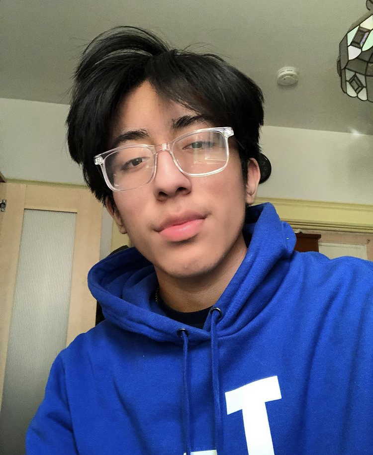

Hello,
I'M GABRIEL
I'm a Guitarist, TXTER,
& Designer



About Me
Musician & Website Designer
I enjoy guitar and playing as a percussionist with the Youth Orchestra of Los Angeles. I also love creating websites, promotional videos, and music of my own. My passion is to help solve problems in our communities through technology and entrepreneurship. My personal goal is to create change in my community of Los Angeles and lead the future generation. I truly am inspired by those around me and enjoy learning new perspectives and build off other people's skills to create projects close to my heart.